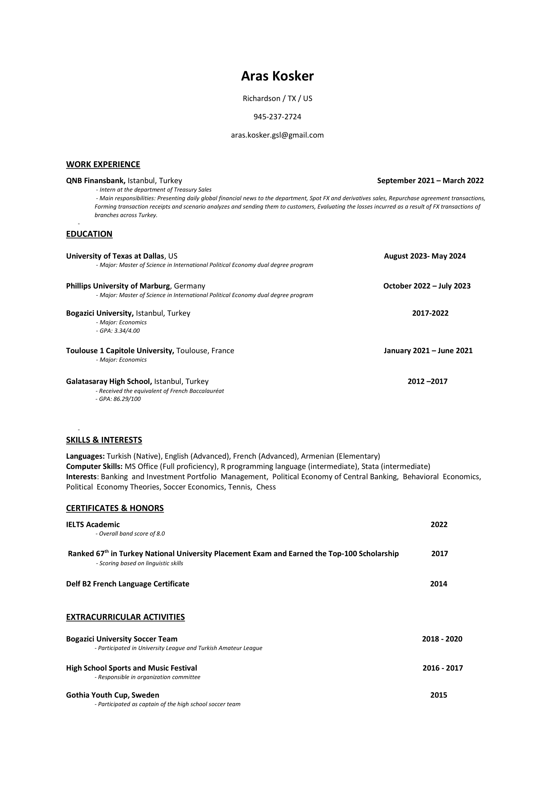

Aras Kosker
Welcome to my amazing website.
My name is Aras Kosker, I’am doing my master’s in international political economy at UT Dallas. Belove there is my CV.

My answers for Assignment 1
The final version of the survey: https://utdallas.qualtrics.com/jfe/form/SV_1B5tbWVp9fwXisK
2.a) The survey consists of one element of instructive introduction and 17 short questions.
2.b) The first element is a kind instruction about the survey. Q2 is a matrix question. Q3 is a multiple choice. Q4 is a yes/no question. Q5 and Q6 are multiple choice questions. Q7 and Q8 are yes/no questions. Q9 to Q13 are multiple choice questions. Q14 to Q18 are demographic questions.
2.c) After the instructions, certain thoughts and behaviorus about movies is asked by either yes/no, matrix or mutliple choice questions. Then, 5 demographic quesions are asked at the end.
7. Questions can be optimized for mobile.
Further assignment
link to survey: https://utdallas.qualtrics.com/jfe/form/SV_dpqFtpMk7vEHIY6
4. This survey consists of 3 blocks, previous one did not consist of different blocks. Using different blocks for different categories of questions is useful to make the survey better organized which might increase the comfort of respondents and the reliability of the results.
Assignment 2
Looking at the google trends data for 5 years for the keywords Trump, Biden and Elections; we see that Trump is almost always the most searched one, and that the second most is Biden. However, during election time, election becomes the most searched one. After Trump lost the last election, we see that his popularity decreased but during the last year, it is in an increase.
R codes for the same dataset:
library(gtrendsR)
a<-gtrends(c(“trump”,“biden”,“elections”))
b<-a$interest_over_time
I think using the R package is more useful because you can have all the data more easily.
Assignment 3
When we look at the plots, we see that Trump used the word “American” more than Biden and Obama respectively. We also see that Obama used the word “people” more than Trump and Biden.
“Wordfish is a Poisson scaling model of one-dimensional document positions (Slapin and Proksch 2008). Wordfish also allows for scaling documents, but in comparison to Wordscores, reference scores/texts are not required. Wordfish is an unsupervised one-dimensional text scaling method, meaning that it estimates the positions of documents solely based on the observed word frequencies.” (source: https://tutorials.quanteda.io/machine-learning/wordfish)